Jane
The test she sets
Jane earns well and saves steadily, but she is the first in her family to invest, so there is nobody at home to sanity-check a decision. Every screen has to explain itself to someone with no one to ask.
Most money apps show you numbers. They rarely tell you what the numbers mean. Finora is an app I designed to answer one question first, am I doing okay, and then give one clear thing to do about it. This is a concept project, designed on my own, and this page walks through how I got there.

The problem
I started this project by using four personal finance apps for a month, on my own accounts. They were all good at showing me things. Balances, charts, categories, percentages. None of them answered the question I actually had, which was whether any of it was going well.
This is a concept project. Nobody briefed me and nothing shipped, so nothing on this page is a result. What it is instead is a set of decisions, each one with the reasoning attached, and a plan for what I would test first.
The landscape
The four apps I lived with, the ones most people are choosing between. Each is good at something different.
Monarch Money
The most complete tracker. It tells you what happened, not whether it was fine.
Copilot Money
The best at sorting transactions. It tidies the data rather than interpreting it.
Empower
Asks the right question, on track or not, but only for retirement and against a benchmark.
Cleo
The only one that talks first. The teasing tone stops working when the number worries you.
| Capability | Monarch | Copilot | Empower | Cleo | Finora |
|---|---|---|---|---|---|
| Answers "am I doing okay" with a verdict | No | No | Retirement only | Partly | Yes |
| Shows the reasoning behind the answer | No | No | No | No | Yes |
| Says how confident it is | No | No | No | No | Yes |
| Ends on one next step | No | No | No | Partly | Yes |
| Progress measured against your goal | Partly | No | Against a benchmark | Partly | Yes |
| Sorts transactions for you | Yes | Best in class | Yes | Yes | Not attempted |
Every one of them is built to report. None of them is built to judge.
Finora takes the opposite position. It answers first and shows the working underneath, because an answer you can check is the only kind worth trusting with money. That single decision drives everything after it: the confidence score on every reply, the one next step on every screen, the goal shown as a fraction rather than a balance.
The trade is real and worth naming. Finora gives up the ground the other four own. It does not try to beat Copilot at sorting transactions, it has no cash advances, no couples accounts and no bill negotiation. It is one app doing one thing that none of the others do.
(I)
I wrote two people to design against. They are not research findings, and I am not going to dress them up as any. They are a pair of tests: if a screen does not work for Jane or for David, it does not go in.
Jane
The test she sets
Jane earns well and saves steadily, but she is the first in her family to invest, so there is nobody at home to sanity-check a decision. Every screen has to explain itself to someone with no one to ask.
David
The test he sets
David's income moves month to month, and four apps have already left him feeling behind rather than informed. Every screen has to hold up on the month the numbers are bad.
Feelings come first. People talk about money in terms of worry and relief, not in terms of returns. An app that only speaks in numbers is answering a different question.
Fewer choices, not more tools. The apps I used all added features. What I wanted was for one of them to decide something for me and say why.
Trust comes from showing the working. I only believed advice when I could see where it came from and when it admitted what it did not know.
A balance is not progress. Fifteen thousand saved means nothing on its own. Fifteen thousand of the twenty thousand you need means something.
Help, do not grade. Several apps compared me to an average. It made me want to close the app, which is the opposite of what a money app needs.
(II)
I wrote the jobs around the moment someone opens the app, not around the features they might use. Each one starts with a feeling, because that is what actually makes a person pick up their phone and check.
(III)
Four rules I held every screen against. They are short so that I could actually remember them while drawing, and they are written as decisions rather than values, so that each one can be used to reject something.
Calm before clever
I asked one question of every animation, colour and sentence: does this make someone calmer about their money? A few things I liked did not survive it.
Show the working
A padlock icon does not make an app trustworthy. Every AI answer says what it looked at, how sure it is, and what it does not know.
Explain, do not instruct
Finora does not tell you what to do with your money. It says what it sees and why, and you decide. It is your money, so the decision stays yours.
One next step
Every screen ends with one thing to do, not a list to choose from. If I could not decide which step mattered most, the screen was not finished.
(IV)
The home screen holds the three things people check: what they have, what they are saving for, and what they spent. The AI sits in two places. Small notes appear on the screens you are already looking at, and a full coach screen waits for when you want to ask something. Small help first, then bigger help when it has been earned.
Home
Dashboard
AI, small
Coach notes on the screen you are already looking at
AI, big
The AI financial coach, for when you want to ask
(V)
I mapped the five steps a new user goes through to find where confidence drops. It drops in the middle, at the moment the app finishes reading your accounts and shows you the result. The numbers arrive, but nobody says whether they are good. That one moment is what the rest of the app is built to fix.
| Stage | Onboarding | Connect | Assess | Act | Review |
|---|---|---|---|---|---|
| User goal | Say what I am actually saving for | Get everything in one place | Find out whether I am on track | Do the one thing that helps most | See what has changed since last month |
| Challenges | Another app asking to be trusted up front | Handing over access to every account | Numbers arrive without a verdict | Too many options, none of them explained | Progress shown as balances, not as goals |
| Opportunities | Open on the goal, not on a feature tour | Say what is read, and why it is needed | A plain answer first, the workings underneath | One next step, with the reasoning attached | A forecast that says what moved, and why |
| Emotion | Cautious | Wary | Uncertain | Confident | Reassured |
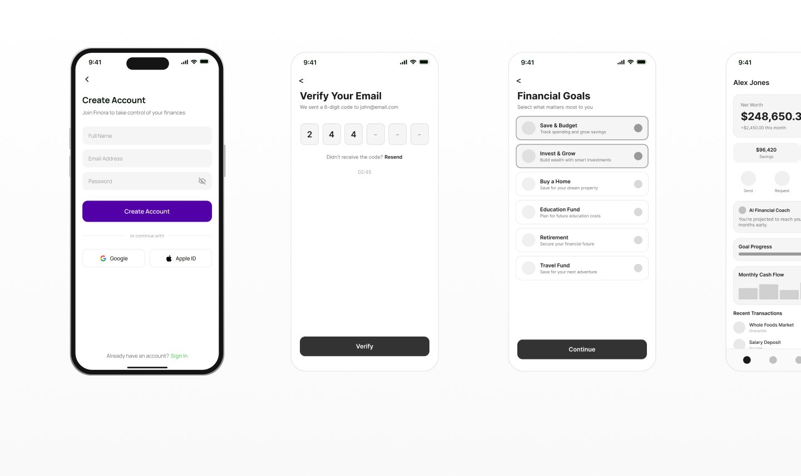
(I)
One purple does two jobs: it marks anything the AI said, and it marks anything you can tap. Green, red and amber mean money is going well, badly, or needs a look, and nothing else. There is a second, separate set of colours for chart categories like housing and transport. Those are labels, not judgements, and I keep them apart from the four above so that a colour never means two things at once.
| Colour | Name | Hex | RGB | Token |
|---|---|---|---|---|
| Primary purple | #5101A7 | 81, 1, 167 | color/brand/primary | |
| Purple, light | #8826F2 | 136, 38, 242 | color/brand/primary-light | |
| Success green | #22C55E | 34, 197, 94 | color/status/positive | |
| Alert red | #E05555 | 224, 85, 85 | color/status/negative | |
| Caution amber | #F0AD4E | 240, 173, 78 | color/status/caution | |
| Text primary | #141414 | 20, 20, 20 | color/text/primary | |
| Text secondary | #6C6C6C | 108, 108, 108 | color/text/secondary | |
| Border | #F0F0F0 | 240, 240, 240 | color/border/default |
(II)
One typeface, Manrope, everywhere. Its round shapes read as friendly rather than corporate, which matters on a screen showing someone their savings. Ten sizes, 34 down to 12, following the iOS scale so the app feels native. Nothing smaller than 12. Every figure uses tabular numerals, so a column of amounts lines up on the decimal point instead of wobbling.
Investments
Spending Analytics
Goal Progress
AI Financial Coach
Projected to reach your goal early.
Income, spend, assets
8% vs target
Savings rate
$248,650.32
+$2,840, +1.98%
(III)
Four columns on a 393 point screen. The margin is 16 and the gutter is 8, both from the 8 point scale, which leaves 361 points of content. The margin and gutter never change; the columns stretch to fill whatever is left. Every screen sits on the same four, whether a card runs the full width or splits across them.
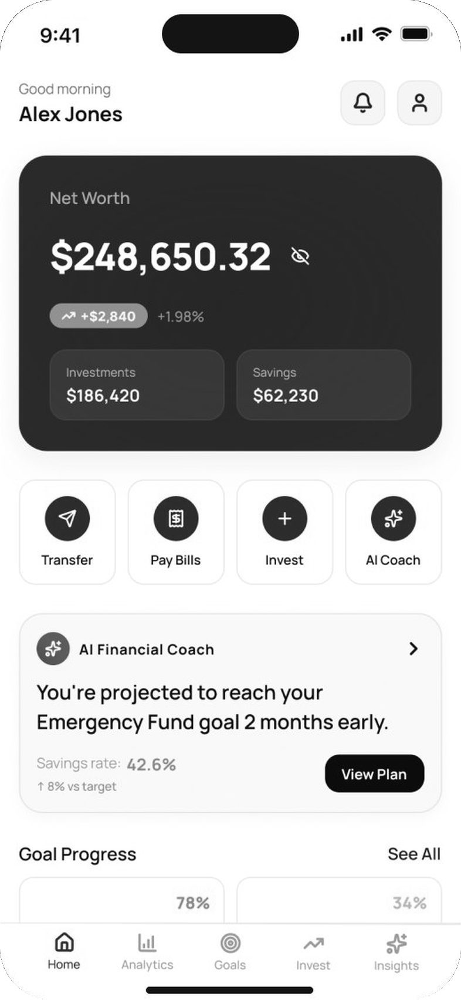
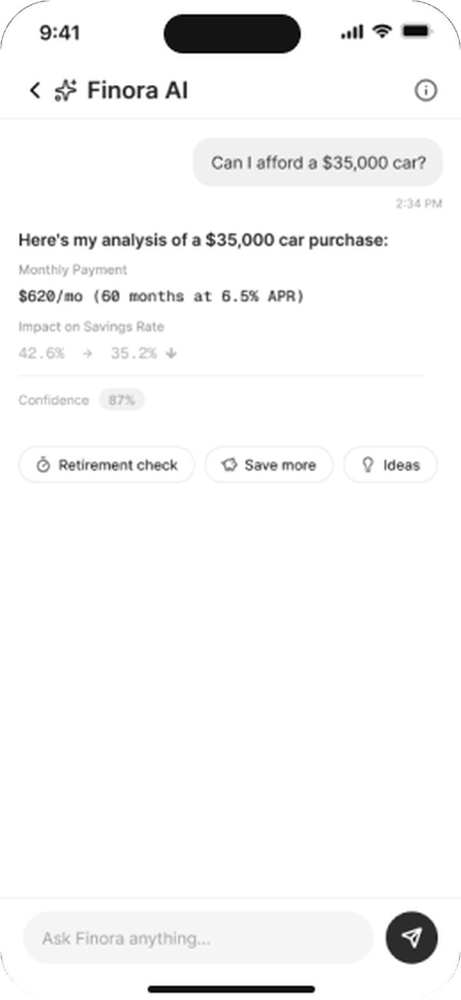
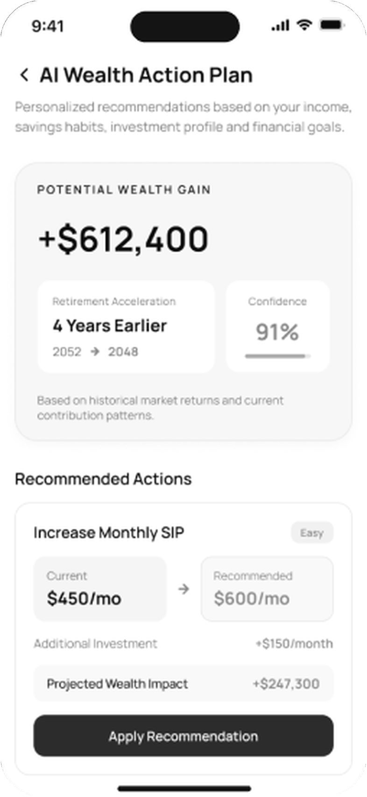
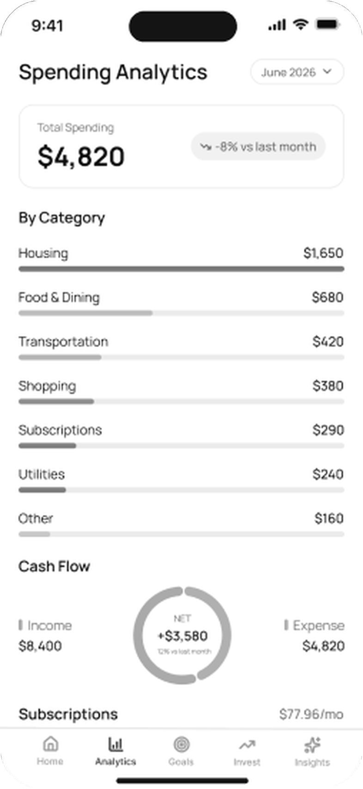
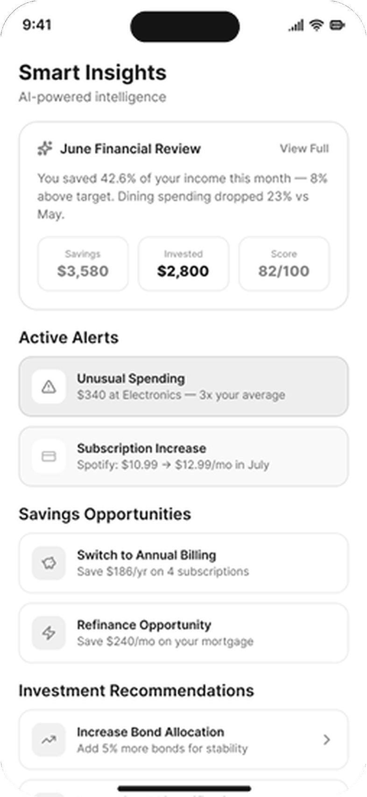
(IV)
WCAG 2.2 AA
#141414 on #FFFFFF18.42:1, AAA
#5101A7 on #FFFFFF10.98:1, AAA
#6C6C6C on #FFFFFF5.25:1, AA
The three text colours clear 4.5:1 on white. The bright green, red and amber do not, so they are fills only: a badge, a chart segment, a progress bar. Where the same status has to be written as a word or a number, it uses a darker version of the same colour that does clear 4.5:1.
8-point grid
Every gap is a multiple of 8, including the grid gutter. Five values cover the whole app. Fewer choices means I never have to guess a number, and the screens end up sharing a rhythm without anyone having to notice why.
(V)
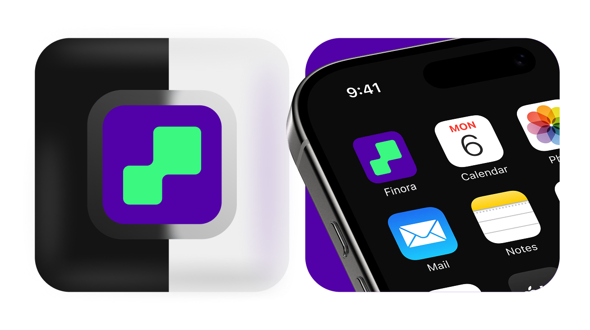
Eight screens. Each one is here for a decision rather than for the screen itself, so what sits above every image is the reason it went that way and what the choice gave up.
(I)
The home screen answers the question first and shows the numbers second. Net worth sits at the top, then one note from the coach in plain words, then goals. I cut the six cards I first drew down to four, because a home screen that lists everything is the same as a home screen that says nothing.
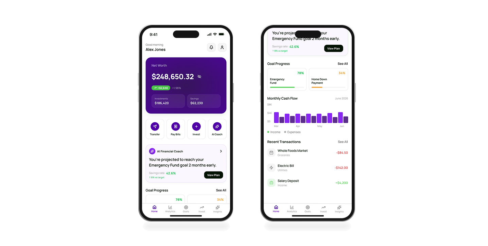
(II)
The coach answers questions in sentences, not charts. Every reply has the same three parts: what it looked at, what it thinks, and one thing you could do. It also shows how confident it is, which was the hardest decision here. A number that admits doubt is less impressive, and it is the only reason to believe the rest.
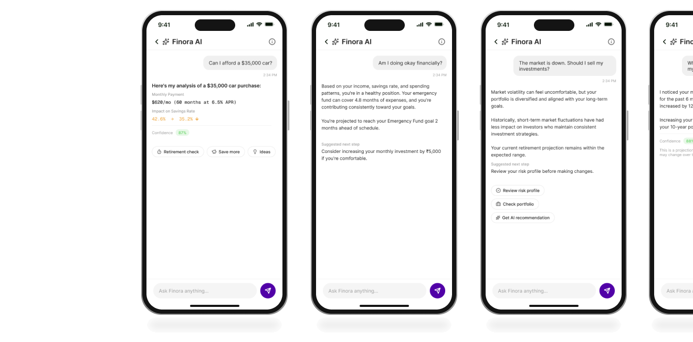
(III)
The planner shows what a change would be worth before it asks you to make it. Each recommendation carries its own number, so you can weigh the effort against the size of the gain. The projection draws two lines rather than one, your path now and your path with the plan applied, and shades the gap between them. That gap is the only thing being sold, so it is the only thing the chart emphasises.
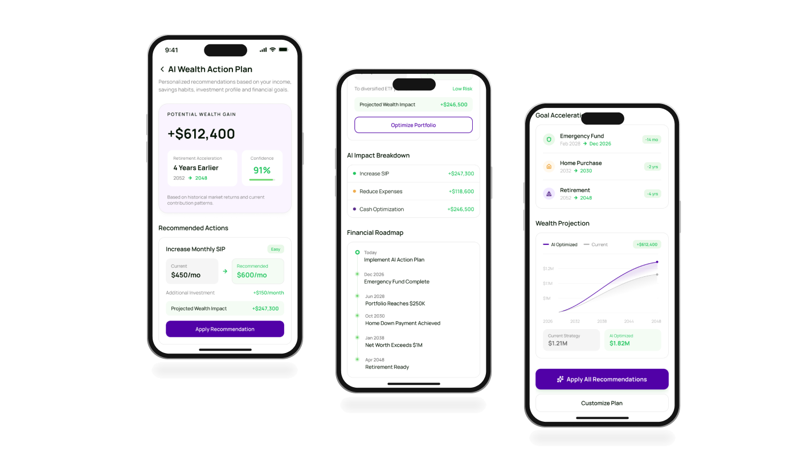
(IV)
Spending is the screen where an app usually makes you feel bad. So this one leads with what went right, spending down 8% on last month, before it breaks anything down. Categories are sorted by size, and subscriptions get their own card because that is where the money quietly leaks.
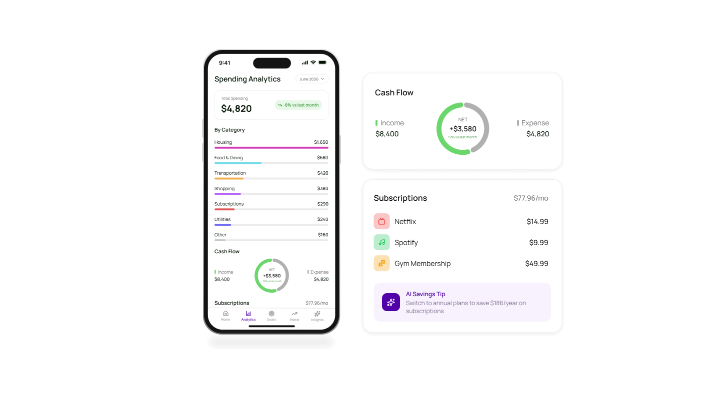
(V)
A goal is shown as a fraction, never as a balance. $15,600 means nothing; $15,600 of the $20,000 you need means you are nearly there. Each goal also carries a date and whether you are ahead or behind it, because that is the part people actually check.
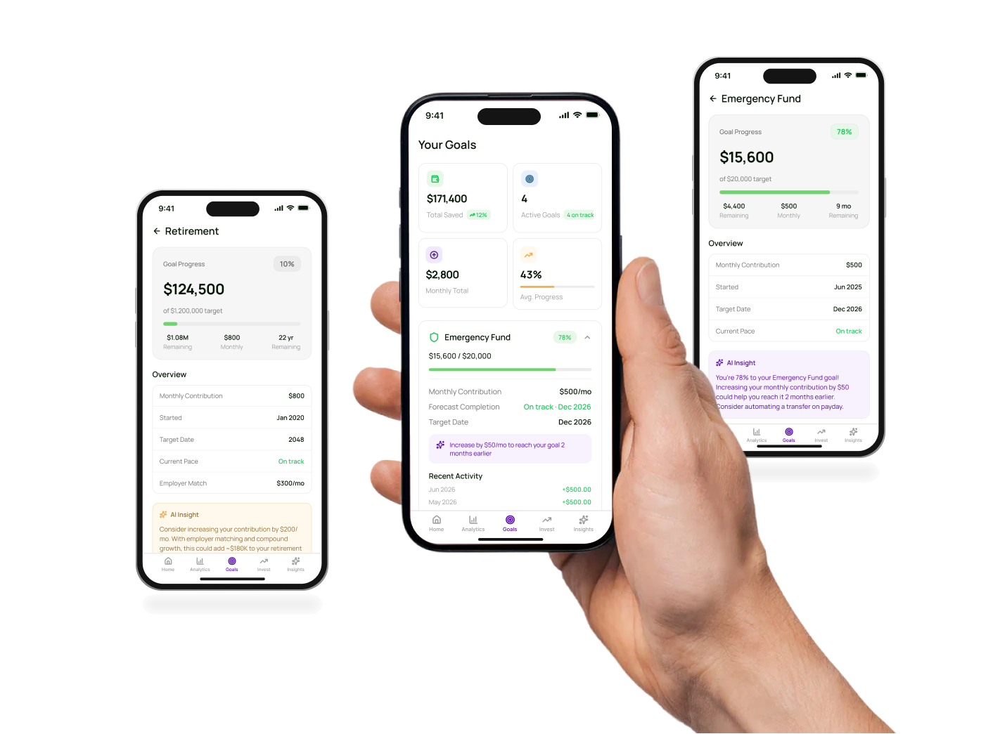
(VI)
The portfolio opens on one number and a split, not on a list of holdings. Everything else is one tap down. I built it for someone who owns six things and checks monthly, not for a day trader, which meant leaving out most of what investment apps put on this screen.
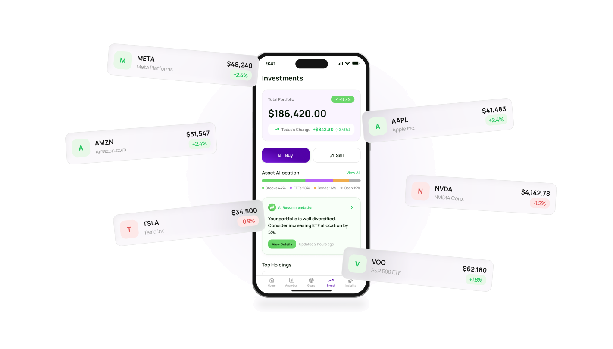
(VII)
This is the one screen where Finora has to look like a real trading app, because that is what people expect when they tap a stock. The AI analysis sits under the chart rather than above it, so it reads as a second opinion on what you are already looking at, not as a recommendation to buy.
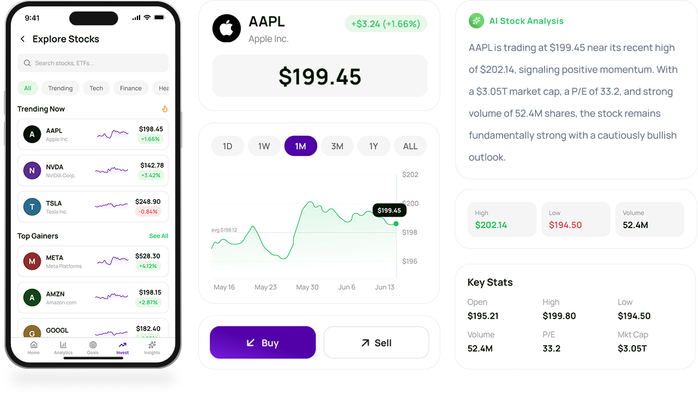
(VIII)
Insights is the app talking without being asked, which is the easiest way to become annoying. So it is limited to a monthly review and a short list, each item with a number attached to it. If a note cannot say what it is worth in dollars or in months, it does not appear.
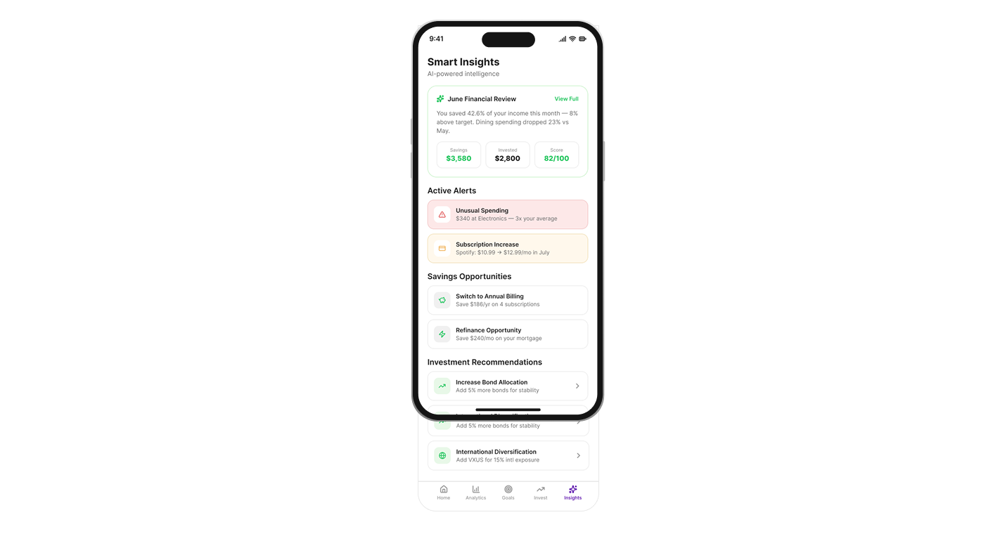
Nothing here has been in front of a real user, so I am not going to claim it works. What I can do is say what I am least sure about, and how I would find out. These are in the order I would run them.
Does the home screen actually answer the question?
Show someone the home screen for five seconds, take it away, and ask them whether they are doing okay with their money. If they can answer, and their answer matches what the screen said, the main idea holds. If they start reciting numbers, it does not.
Does showing confidence build trust or damage it?
The coach says how sure it is. My assumption is that admitting doubt earns trust. It might do the opposite and just make the advice feel weak. I would show two versions of the same reply, one with the confidence score and one without, and ask which they would act on.
Is one next step enough, or does it feel like being told what to do?
Every screen ends with a single action. That is the principle I am least confident in, because the line between helpful and bossy is thin and probably personal. I would watch for the moment someone looks for the option that is not there.
Will anyone connect their bank?
The whole app depends on step two, and step two is asking a stranger for access to every account you own. No amount of visual design fixes that on its own. I would test whether saying exactly what is read, and what is not, moves the number at all.
Writing the principles first made the screens faster to draw
Four short rules settled most of the small arguments before they started. When I was stuck on a screen, it was almost always because two of them were pulling against each other, and knowing that was usually enough to unstick it.
Making the numbers add up changed the design
I set the fake data so that it actually reconciles: investments plus savings equal net worth, income minus spending equals the savings rate. Doing that exposed screens where I had been laying out a shape rather than showing information.
A colour rule is easy to write and easy to break
I wrote that green, red and amber only ever mean something about money, then used a category chart that spent them on housing and transport. Rules do not hold on their own. They hold when the palette makes the wrong choice hard to reach.
Designing my own brief is harder than being given one
With nobody to say no, the scope kept growing and every idea looked reasonable. The jobs to be done ended up doing the job a client normally does, which is telling me what this app is not for.